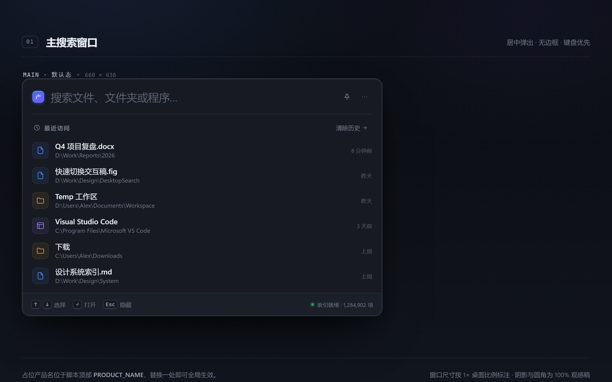
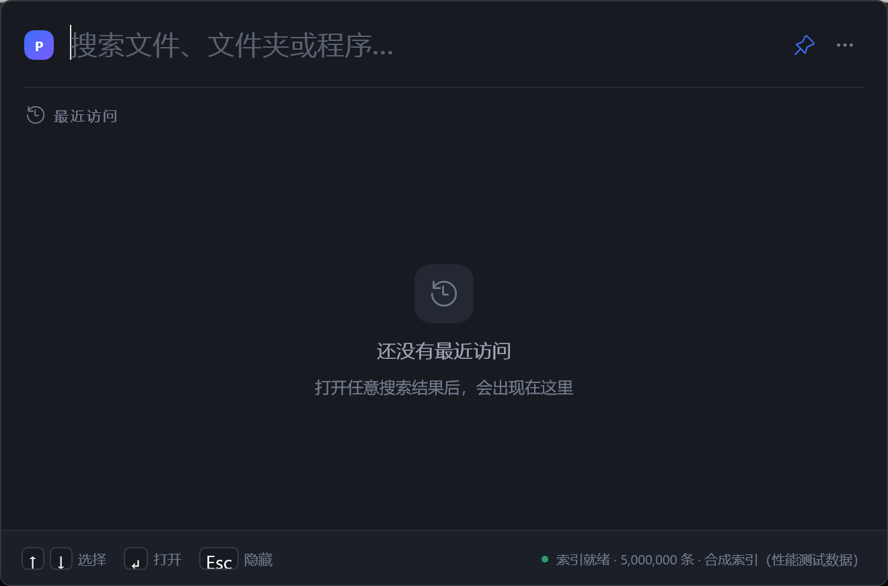

Screen 1 · Empty state
主搜索窗口 · 最近访问首页
空输入时建立「最近访问」心智：同样的行结构、时间戳与底部键位提示。
设计稿 D-main-recent.png660 × 436

实机 01-main-recent.pngCopyFromScreen · 200%

| # | 设计稿要求 | 当前实现 | 差距 | 状态 |
|---|---|---|---|---|
| 1 | 最近访问列表：图标 / 名称 / 路径 / 时间 | 同一套行模板，按时间倒序 | 本机无历史记录，截图呈空态引导文案 | 部分（内容依赖真实使用） |
| 2 | 底部常驻键盘提示 | ↑↓ 选择、↵ 打开、Esc 隐藏，右侧索引状态 | 设计稿另有 Tab 切换范围；功能未接入，不放假键位 | 已知差异（诚实省略） |
| 3 | 1px 描边、圆角 14 | DWM 单层描边；系统圆角约 8 | 圆角小于设计稿 | 已知差异 |